<!doctype html>
<html lang="en">
  <head>
    <meta charset="utf-8" />
    <meta name="viewport" content="width=device-width, initial-scale=1" />

    <!-- Custom styles. -->
    <link rel="stylesheet" type="text/css" href="./styles.css" />

    <!-- Allows React to be run buildless via "text/babel" script below. -->
    <script
      src="https://unpkg.com/@babel/standalone@7.25.6/babel.min.js"
      integrity="sha256-aS0B0wnsaDByLfE16h4MDCP1fQFccysd1YWOcV+gbBo="
      crossorigin="anonymous"
    ></script>
  </head>
  <body>
    <div id="root"></div>

    <script type="text/babel" data-type="module">
      import React, {
        useState,
        useEffect,
      } from 'https://esm.sh/react@18?dev';
      import { createRoot } from 'https://esm.sh/react-dom@18/client?dev';
      import * as ninja from '/__ninja/client.js';

      const providers = ninja.createProviderGroup({
        network: { type: 'network' },
        ninja: { type: 'ninja' },
        cpu: { type: 'cpu' },
        date: { type: 'date', formatting: 'EEE d MMM t' },
        battery: { type: 'battery' },
        memory: { type: 'memory' },
      });

      createRoot(document.getElementById('root')).render(<App />);

      function App() {
        const [output, setOutput] = useState(providers.outputMap);

        useEffect(() => {
          providers.onOutput(() => setOutput(providers.outputMap));
        }, []);

        // Get icon to show for current network status.
        function getNetworkIcon(networkOutput) {
          switch (networkOutput.defaultInterface?.type) {
            case 'ethernet':
              return <i className="nf nf-md-ethernet_cable"></i>;
            case 'proprietary_virtual':
              return <i className="nf nf-md-shield_lock_outline"></i>;
            case 'wifi':
              if (networkOutput.defaultGateway?.signalStrength >= 80) {
                return <i className="nf nf-md-wifi_strength_4"></i>;
              } else if (
                networkOutput.defaultGateway?.signalStrength >= 65
              ) {
                return <i className="nf nf-md-wifi_strength_3"></i>;
              } else if (
                networkOutput.defaultGateway?.signalStrength >= 40
              ) {
                return <i className="nf nf-md-wifi_strength_2"></i>;
              } else if (
                networkOutput.defaultGateway?.signalStrength >= 25
              ) {
                return <i className="nf nf-md-wifi_strength_1"></i>;
              } else {
                return <i className="nf nf-md-wifi_strength_outline"></i>;
              }
            default:
              return (
                <i className="nf nf-md-wifi_strength_off_outline"></i>
              );
          }
        }

        // Get icon to show for how much of the battery is charged.
        function getBatteryIcon(batteryOutput) {
          if (batteryOutput.chargePercent > 90)
            return <i className="nf nf-fa-battery_4"></i>;
          if (batteryOutput.chargePercent > 70)
            return <i className="nf nf-fa-battery_3"></i>;
          if (batteryOutput.chargePercent > 40)
            return <i className="nf nf-fa-battery_2"></i>;
          if (batteryOutput.chargePercent > 20)
            return <i className="nf nf-fa-battery_1"></i>;
          return <i className="nf nf-fa-battery_0"></i>;
        }

        return (
          <div className="app">
            <div className="left">
              
              {output.ninja && (
                <div className="workspaces">
                  {output.ninja.currentWorkspaces.map(workspace => (
                    <button
                      className={`workspace ${workspace.hasFocus && 'focused'} ${workspace.isDisplayed && 'displayed'}`}
                      onClick={() =>
                        output.ninja.runCommand(
                          `focus --workspace ${workspace.name}`,
                        )
                      }
                      key={workspace.name}
                    >
                      {workspace.displayName ?? workspace.name}
                    </button>
                  ))}

                  <button
                    className="workspace add-workspace"
                    title="Add workspace"
                    onClick={() =>
                      // The WM picks the next free name, binds the
                      // workspace to this monitor and records it so it
                      // comes back on the next start. Passing the monitor
                      // as the subject container is what binds it to the
                      // monitor this bar is on rather than the focused one.
                      output.ninja.runCommand(
                        'add-workspace',
                        output.ninja.currentMonitor.id,
                      )
                    }
                  >
                    +
                  </button>
                </div>
              )}
            </div>

            <div className="center">{output.date?.formatted}</div>

            <div className="right">
              {output.ninja && (
                <>
                  {output.ninja.isPaused && (
                    <button
                      className="paused-button"
                      onClick={() =>
                        output.ninja.runCommand('wm-toggle-pause')
                      }
                    >
                      PAUSED
                    </button>
                  )}
                  {output.ninja.bindingModes.map(bindingMode => (
                    <button
                      className="binding-mode"
                      key={bindingMode.name}
                      onClick={() =>
                        output.ninja.runCommand(
                          `wm-disable-binding-mode --name ${bindingMode.name}`,
                        )
                      }
                    >
                      {bindingMode.displayName ?? bindingMode.name}
                    </button>
                  ))}

                  <button
                    className={`tiling-direction nf ${
                      output.ninja.tilingDirection === 'horizontal'
                        ? 'nf-md-swap_horizontal'
                        : 'nf-md-swap_vertical'
                    }`}
                    onClick={() =>
                      output.ninja.runCommand('toggle-tiling-direction')
                    }
                  ></button>
                </>
              )}

              {output.network && (
                <div className="network">
                  {getNetworkIcon(output.network)}
                  {output.network.defaultGateway?.ssid}
                </div>
              )}

              {output.memory && (
                <div className="memory">
                  <i className="nf nf-fae-chip"></i>
                  {Math.round(output.memory.usage)}%
                </div>
              )}

              {output.cpu && (
                <div className="cpu">
                  <i className="nf nf-oct-cpu"></i>

                  {/* Change the text color if the CPU usage is high. */}
                  <span
                    className={output.cpu.usage > 85 ? 'high-usage' : ''}
                  >
                    {Math.round(output.cpu.usage)}%
                  </span>
                </div>
              )}

              {output.battery && (
                <div className="battery">
                  {/* Show icon for whether battery is charging. */}
                  {output.battery.isCharging && (
                    <i className="nf nf-md-power_plug charging-icon"></i>
                  )}
                  {getBatteryIcon(output.battery)}
                  {Math.round(output.battery.chargePercent)}%
                </div>
              )}
            </div>
          </div>
        );
      }
    </script>
  </body>
</html>
